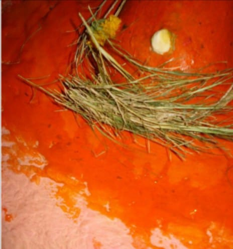

<?xml version="1.0" encoding="UTF-8"?><rss version="2.0"
	xmlns:content="http://purl.org/rss/1.0/modules/content/"
	xmlns:wfw="http://wellformedweb.org/CommentAPI/"
	xmlns:dc="http://purl.org/dc/elements/1.1/"
	xmlns:atom="http://www.w3.org/2005/Atom"
	xmlns:sy="http://purl.org/rss/1.0/modules/syndication/"
	xmlns:slash="http://purl.org/rss/1.0/modules/slash/"
	>

<channel>
	<title>Nagesh Vinayak &#8211; Varanasi Temples</title>
	<atom:link href="index.html" rel="self" type="application/rss+xml" />
	<link>../../../../index.html</link>
	<description>Temples of Varanasi as referred to in Kashi Khand</description>
	<lastBuildDate>Thu, 19 Jun 2025 05:16:46 +0000</lastBuildDate>
	<language>en-US</language>
	<sy:updatePeriod>hourly</sy:updatePeriod>
	<sy:updateFrequency>1</sy:updateFrequency>
	<generator>https://wordpress.org/?v=4.6.29</generator>
	<item>
		<title>NAGESH VINAYAK</title>
		<link>../../../../vinayak-temples/nagesh-vinayak/index.html</link>
		<pubDate>Sat, 08 May 2010 02:21:37 +0000</pubDate>
		<dc:creator><![CDATA[admin]]></dc:creator>
				<category><![CDATA[Nagesh Vinayak]]></category>
		<category><![CDATA[Vinayak Temples]]></category>

		<guid isPermaLink="false">../../../../p=126.html</guid>
		<description><![CDATA[(NAGESH VINAYAK) Nagesh Vinayak is located at House No. Ck.1/21, Patani Tola, Bhosala  Ghat, Varanasi, in the premises of Nageshwar Temple. Devotees will be blessed with all sorts of prosperity during life and after death, by praying to this Vinayak. One can travel upto Chowk by Cycle Rickshaw and walk to this place via Sankata [&#8230;]]]></description>
				<content:encoded><![CDATA[<p></p>
<p style="text-align: center;"><strong>(NAGESH VINAYAK)</strong></p>
<p>Nagesh Vinayak is located at House No. Ck.1/21, Patani Tola, Bhosala  Ghat, Varanasi, in the premises of Nageshwar Temple. Devotees will be blessed with all sorts of prosperity during life and after death, by praying to this Vinayak. One can travel upto Chowk by Cycle Rickshaw and walk to this place via Sankata Devi Temple (famous landmark). Alternatively, devotees can approach the place by boat upto Bhosala Ghat and climb up the steps.</p>
<h3>&#8212;&#8212;&#8212;&#8212;&#8212;&#8212;&#8212;&#8212;&#8212;&#8212;&#8212;&#8212;&#8212;&#8212;&#8212;&#8212;&#8212;&#8212;&#8212;&#8212;&#8212;&#8212;&#8212;&#8212;&#8212;&#8212;&#8212;&#8212;&#8212;&#8212;</h3>
<p><strong>Kashi Khand, Chapter 57, Shlok 106</strong></p>
<p>&nbsp;</p>
<p><strong>उद्दण्डमुण्डद् गणपात् कीनाशदिशि संस्थितम्</strong></p>
<p><strong>नागेशं गणपं दृष्ट्वा नागलोके महीयते</strong></p>
<p>&nbsp;</p>
<p><strong>Just by worshipping Nagesh Vinayak situated to the south of Uddandamund Ganesh, one gets a respectable place in Nagaloka. </strong></p>
<p>&nbsp;</p>
<h3>&#8212;&#8212;&#8212;&#8212;&#8212;&#8212;&#8212;&#8212;&#8212;&#8212;&#8212;&#8212;&#8212;&#8212;&#8212;&#8212;&#8212;&#8212;&#8212;&#8212;&#8212;&#8212;&#8212;&#8212;&#8212;&#8212;&#8212;&#8212;&#8212;&#8212;</h3>
<h3></h3>
<h3>Please watch our YouTube Video about Nagesh Vinayak at following Link :</h3>
<h3></h3>
<p><a href="https://www.youtube.com/watch?v=MbC7Ju8ghLk&amp;t=55s">https://www.youtube.com/watch?v=MbC7Ju8ghLk&amp;t=55s</a></p>
<p>&nbsp;</p>
<p>&nbsp;</p>
<h3>TYPES OF POOJA</h3>
<p>The temple is open from 07.00 a.m. to 9.00 a.m. and in the evening from 07.00 p.m. to 08.00 p.m. Devotees can perform pooja as per their convenience within the above timings.</p>
]]></content:encoded>
			</item>
	</channel>
</rss>
